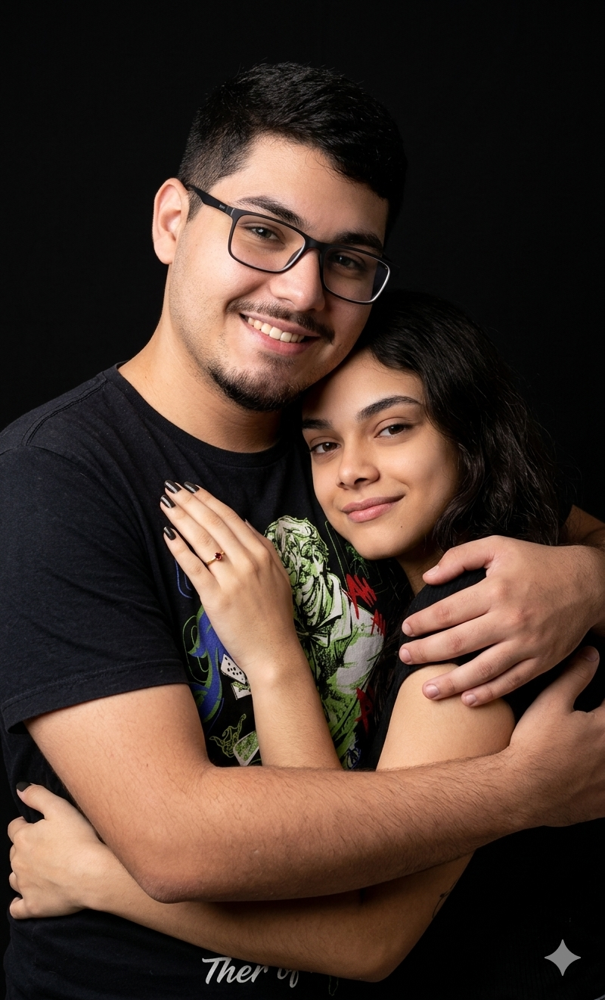

Até que enfim chegaram os nossos 3 meses juntos. Eu estava muito ansioso por esse momento, porque quero que a cada dia a gente fique ainda mais unido.
Você sabe o quanto eu te amo e o quanto desejo passar a minha vida ao seu lado. Espero que esse sentimento dure para sempre e que você nunca se esqueça do quanto é especial para mim.
Mesmo que ainda não possamos nos tocar ou nos ver pessoalmente, eu sei que esse dia vai chegar. E, quando chegar, vamos viver momentos incríveis e ser muito felizes juntinhos.
Cada instante ao seu lado é único e especial para mim. Você faz os meus dias melhores, e eu sou muito grato por ter você na minha vida.
Eu te amo muito, minha Nat Marquis. Espero que você goste deste pequeno texto que fiz com todo o carinho do mundo para você.
Parabéns por ser essa garota incrível, carinhosa e por sempre ser tão boa comigo.
Eu te amo demais e desejo que nós dois fiquemos juntos para sempre. ❤️